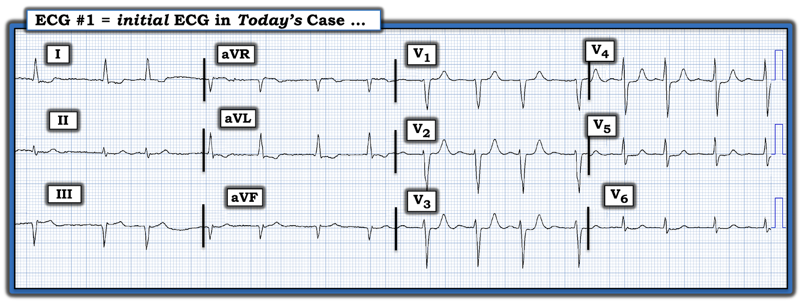
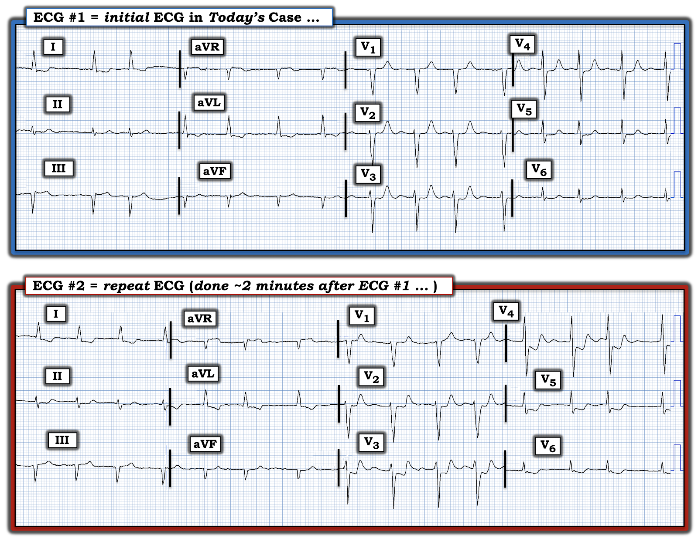

ECG Blog #387 — 2 phút sau ...
Điện tâm đồ ở Hình 1 được ghi từ một người đàn ông lớn tuổi có tiền sử bệnh mạch vành — ông gọi đội cấp cứu ngoài viện (EMS) vì cảm giác khó chịu "nóng rát" ở ngực làm ông thức giấc lúc 3 giờ sáng. Khác với các cơn đau thắt ngực "thường lệ" của ông — lần khó chịu ở ngực này không đỡ khi dùng NTG. Một khoảng thời gian đã trôi qua ở nhà — trong suốt thời gian đó cảm giác khó chịu ở ngực vẫn kéo dài
- Bệnh nhân ổn định huyết động vào lúc được EMS thăm khám, khi điện tâm đồ #1 được ghi.
CÂU HỎI:
- BẠN sẽ đọc điện tâm đồ ban đầu trong ca hôm nay như thế nào?
- Với bệnh sử nêu trên — điện tâm đồ #1 có gợi ý một biến cố cấp tính không? Có nên kích hoạt phòng thông tim (cath lab) không?


SUY NGHĨ CỦA TÔI về điện tâm đồ #1:
Với bệnh sử như vậy — điện tâm đồ ban đầu trong ca hôm nay rõ ràng là đáng lo ngại! Tôi thấy những điểm sau:
- Mặc dù không có dải nhịp chuyển đạo dài — chúng ta vẫn thấy nhịp là AFib với đáp ứng thất được kiểm soát (tức là nhịp không đều hoàn toàn, không có sóng P — và tần số tim khoảng ~70-110/phút).
- Về các khoảng: Không có khoảng PR (vì nhịp là AFib). Phức bộ QRS hẹp. QTc nhiều nhất chỉ kéo dài nhẹ.
- Trục: Lệch nhẹ sang trái — nhưng chưa đủ lệch trái để đạt tiêu chuẩn LAHB (tức là QRS âm ưu thế ở chuyển đạo aVF — nhưng không âm ưu thế ở chuyển đạo II).
- Không lớn buồng tim.
- Có sóng Q lớn, rộng ở chuyển đạo III và aVF — phù hợp với tiền sử bệnh mạch vành đã biết của bệnh nhân lớn tuổi này (tức là nhồi máu thành dưới cũ).
Những thay đổi đáng chú ý nhất trên điện tâm đồ #1 liên quan đến sóng ST-T:
- Ở các chuyển đạo chi — thay đổi ST-T trông không cấp tính. Chỉ có ST chênh lên dốc lên ở mức tối thiểu ở chuyển đạo III và aVF — với thể tích sóng T dương ở các chuyển đạo này không lớn bất tương xứng so với các sóng Q rất rộng và sâu đang có.
- Đoạn ST ở chuyển đạo dưới còn lại ( = chuyển đạo II) dẹt, nhưng hoàn toàn không chênh lên.
- Có một ít ST chênh xuống dốc xuống ở các chuyển đạo bên cao I và aVL — phù hợp với hình ảnh ST-T soi gương ngược chiều so với những gì ta thấy ở chuyển đạo III và aVF.
- NHƯNG — ở các chuyển đạo trước ngực — Chắc chắn có những thay đổi ST-T đáng lo ngại! Điều này càng đúng khi xét đến Bệnh sử trong ca hôm nay.
ĐIỂM THEN CHỐT (PEARL) #1: Bình thường, sẽ có ST chênh lên nhẹ, dốc lên ở các chuyển đạo trước V2 và V3. Không chỉ thiếu mất đoạn ST chênh lên nhẹ này ở V2,V3 trên điện tâm đồ #1 — mà đoạn ST ở các chuyển đạo này (cũng như ở các chuyển đạo lân cận V1; và V4,V5) còn dẹt rõ rệt!
- Hình ảnh ST dẹt này (kèm mất đoạn ST chênh lên nhẹ bình thường ở V2,V3) — cần được nhận ra ngay lập tức là bất thường, đặc biệt ở một bệnh nhân nguy cơ cao (như người đàn ông lớn tuổi có bệnh mạch vành đã biết trong ca hôm nay — với cơn khó chịu ở ngực mới xuất hiện không đỡ khi dùng NTG).
ĐIỂM THEN CHỐT #2: Khi sóng T ở các chuyển đạo trước ngực vùng trước dương (như trong Hình 1) — thì sóng T ở chuyển đạo V1 thường sẽ không cao hơn sóng T ở chuyển đạo V6.
- Mặc dù sự "mất cân đối" sóng T trước tim (T wave imbalance) này không thường gặp — nhưng trong bối cảnh lâm sàng “phù hợp”, nó có liên quan với OMI (nhồi máu cơ tim do tắc — Occlusion-based MI) mới xảy ra, thường gặp nhất do động mạch thủ phạm là LCx (Xem Manno và cs.: JACC 1:1213, 1983 — và bài ngày 17 tháng 7 năm 2013 của Salim Rezaie trên ALiEM — và ECG Blog #350).
- LƯU Ý: Điều này không có nghĩa là sóng T cao, dương ở chuyển đạo V1 không thể đôi khi là kết quả của một biến thể tái cực hoặc hình ảnh soi gương của “tăng gánh” thất trái (LV “strain”) đôi khi thấy ở các chuyển đạo trước. Mà — điều tôi muốn nói chỉ đơn giản là đôi khi — tôi nhận thấy việc nhận ra một sóng T cao, dương ở chuyển đạo V1, rõ ràng cao hơn nhiều so với sóng T ở chuyển đạo V6, là một manh mối dẫn tới hội chứng vành cấp mà có lẽ nếu không thì tôi đã không nhận ra.
ĐIỂM THEN CHỐT #3: Diễn tiến của nhồi máu cơ tim cấp do tắc động mạch vành cấp — thường diễn ra ngắt quãng (staggered). Ý tôi là ngay cả khi không có PCI hay điều trị tiêu sợi huyết — mạch "thủ phạm" vẫn có thể tự thông trở lại. Đôi khi mạch "thủ phạm" vẫn thông — nhưng những lúc khác, nó có thể tắc lại vào bất kỳ thời điểm nào. Và, đôi khi quá trình tự thông rồi tắc lại này có thể xảy ra nhiều lần liên tiếp trong thời gian ngắn.
- Tầm quan trọng của việc đối chiếu sự hiện diện (và mức độ nặng tương đối) của CP với từng điện tâm đồ liên tiếp ghi trên bệnh nhân — là việc đó có thể giúp nhận biết mạch "thủ phạm" vào bất kỳ thời điểm nào trong quá trình này nhiều khả năng đang thông hay đang tắc.
- Động mạch vành "thủ phạm" nhiều khả năng đang tắc NẾU — bệnh nhân vẫn đang đau ngực dữ dội — CP (Chest Pain), đặc biệt khi điều này đi kèm ST chênh lên ở vùng nhồi máu.
- Tái tưới máu tự phát nhiều khả năng đã xảy ra NẾU — cùng với sự giảm (hoặc hết) CP, ST chênh lên và ST chênh xuống soi gương cải thiện đáng kể.
- Tái tưới máu động mạch "thủ phạm" càng có khả năng hơn NẾU — cùng với việc hết CP, ta thấy sóng T "tái tưới máu" (tức là sóng T đảo ngược) ở những vùng trước đó có ST chênh lên.
- Điểm MẤU CHỐT: Ở đâu đó giữa giai đoạn ST chênh lên cấp và giai đoạn đoạn ST trở về đường nền — có thể có một giai đoạn "chuyển tiếp" giả bình thường hóa, trong thời gian này điện tâm đồ có thể trông tương đối bình thường (hoặc chỉ có ST-T dẹt không đặc hiệu). NẾU không chú ý tới sự hiện diện và mức độ nặng tương đối của CP đi kèm từng điện tâm đồ liên tiếp — thì sẽ cực kỳ DỄ bỏ sót OMI mới xảy ra nếu điện tâm đồ ban đầu được xem đúng vào giai đoạn giả bình thường hóa này.
ĐIỂM THEN CHỐT #4: Có lẽ vị trí nhồi máu khó nhận ra nhất — là nhồi máu cơ tim thành sau cấp. Đó là vì không có chuyển đạo nào trong bản ghi 12 chuyển đạo chuẩn nhìn trực tiếp vào thành sau.
- Như đã nhấn mạnh trong nhiều bài ECG Blog (Xem ECG Blog #285 và Blog #193 — cùng nhiều bài khác) — việc dùng "nghiệm pháp soi gương" (Mirror Test) giúp nhận ra nhồi máu cơ tim thành sau cấp (tức là Thay vì ST chênh lên — có ST chênh xuống ngược chiều soi gương ở các chuyển đạo trước, vốn cho ta góc nhìn "soi gương ngược chiều" của thành sau thất trái). Thông điệp rất rõ ràng — Nếu, ở một bệnh nhân đau ngực mới — ST-T chênh xuống tối đa ở chuyển đạo V2, V3 và/hoặc V4 — hãy nghĩ đến nhồi máu cơ tim thành sau cấp cho đến khi chứng minh được điều ngược lại.
- Điểm MẤU CHỐT: Ở những vùng tim mà STEMI cấp gây ST chênh lên — sóng T tái tưới máu (xuất hiện sau khi động mạch "thủ phạm" thông trở lại) sẽ biểu hiện dưới dạng sóng T đảo ngược. Điều ngược lại xảy ra với nhồi máu cơ tim thành sau — khi đó thay vì sóng T đảo ngược, sự xuất hiện sóng T cao, dương ở chuyển đạo V2, V3 và/hoặc V4 báo hiệu sự hiện diện của sóng T "tái tưới máu".
ĐIỂM THEN CHỐT #5:
Như đã nhấn mạnh trong ECG Blog #317 — Mặc dù các chuyển đạo phía sau (tức là V7,V8,V9) thường được khuyến khích dùng để giúp nhận ra nhồi máu cơ tim thành sau cấp — nhưng việc dùng chuyển đạo phía sau là không thiết yếu cho mục đích này.
- Biên độ QRST ở các chuyển đạo phía sau giảm so với biên độ ở các chuyển đạo phía trước tương ứng soi gương — vì hoạt động điện mà các điện cực V7,V8,V9 đặt ở phía sau ghi được phải đi xuyên qua khối cơ lưng dày trước khi điện cực thu được hoạt động điện của tim.
- Nhận xét CỦA TÔI: Theo kinh nghiệm hơn 40 năm qua chăm chỉ tìm kiếm nhồi máu cơ tim thành sau — tôi gần như chưa bao giờ thấy chuyển đạo phía sau chẩn đoán được một ca nhồi máu thành sau mà tôi chưa nhận ra trước đó bằng cách áp dụng nghiệm pháp soi gương trên điện tâm đồ 12 chuyển đạo chuẩn. LƯU Ý: Chỉ cần luyện tập một chút — việc áp dụng nghiệm pháp soi gương để giúp nhận ra nhồi máu cơ tim thành sau sẽ trở nên DỄ DÀNG.
===============================
Tổng Hợp Lại Tất cả:
Với Bệnh sử trong ca hôm nay (tức là một người đàn ông lớn tuổi có bệnh mạch vành đã biết — người mà nhiều giờ trước khi ghi điện tâm đồ #1, đã bị đánh thức bởi cơn CP mới không đỡ khi dùng NTG) — tôi sẽ đọc điện tâm đồ #1 là gợi ý OMI thành sau cấp ( = nhồi máu cơ tim do tắc — Occlusion-based MI) — cho đến khi chứng minh được điều ngược lại.
- Mức độ ST chênh xuống vừa phải (tối đa ở chuyển đạo V4) — đi kèm với mất cân đối sóng T (T ở V1>T ở V6), cùng đoạn ST dẹt và sóng T cao, nhọn bất tương xứng ở các chuyển đạo V1 đến V4 — gợi ý đã có tái tưới máu tự phát.
- Sóng Q rất sâu và rộng ở chuyển đạo III và aVF cho thấy đã có nhồi máu thành dưới vào một thời điểm nào đó. Nhồi máu thành dưới này có phải là một phần của OMI thành sau mới xảy ra hay không thì chưa chắc chắn nếu chỉ dựa vào một điện tâm đồ duy nhất ở Hình 1. Suy cho cùng — triệu chứng đã khởi phát từ vài giờ trước — và vẫn còn một ít ST chênh lên ở chuyển đạo III với thay đổi soi gương ở chuyển đạo I và aVL — nên có thể có nhồi máu thành dưới cấp (hoặc mới xảy ra) đi kèm.
- ĐIỂM THEN CHỐT #6: Nếu có sẵn một điện tâm đồ cũ của bệnh nhân hôm nay thì đã có thể trả lời câu hỏi thay đổi ở chuyển đạo chi là "mới" hay "cũ". Tìm được một bản ghi cũ của bệnh nhân hôm nay cũng sẽ xác nhận nhận định của tôi về OMI thành sau mới xảy ra (và/hoặc đang diễn tiến).
- ĐIỂM THEN CHỐT #7: Ngay cả khi không có điện tâm đồ cũ — bệnh sử và các dấu hiệu điện tâm đồ mô tả ở trên của bản ghi ban đầu đã đủ để kích hoạt phòng thông tim. Đó là vì mặc dù động mạch "thủ phạm" có thể đã tự tái tưới máu — Cái gì đã tự thông trở lại thì cũng có thể dễ dàng tự tắc lại — đó là lý do thông tim kịp thời kèm PCI động mạch "thủ phạm" là chỉ định nhằm ngăn tắc lại.
===============================
Ca bệnh Tiếp diễn:
Trên đường đến bệnh viện — một bản ghi khác được thực hiện 2 phút sau điện tâm đồ #1. Để rõ ràng và dễ so sánh — tôi đã đặt điện tâm đồ ghi lại này cạnh bản ghi ban đầu của ca hôm nay trong Hình 2.
CÂU HỎI:
- BẠN sẽ đọc điện tâm đồ ghi lại — được ghi 2 phút sau điện tâm đồ #1 — như thế nào?
- Điện tâm đồ ghi lại này có ủng hộ nhận định của tôi về OMI thành sau mới xảy ra (và/hoặc đang diễn tiến) không?
- Chúng ta đang thiếu thông tin lâm sàng quan trọng nào đi kèm với điện tâm đồ #2?


SUY NGHĨ CỦA TÔI về điện tâm đồ ghi lại:
Trục mặt phẳng trán và hình dạng QRS gần như giống hệt nhau ở cả 12 chuyển đạo trên cả hai bản ghi trong Hình 2. Điều này cho biết việc so sánh từng chuyển đạo một để tìm bất kỳ thay đổi nào về hình dạng ST-T là hợp lệ!
- AFib với đáp ứng thất được kiểm soát không thay đổi.
- Tôi không thấy khác biệt nào về hình dạng ST-T ở chuyển đạo chi giữa 2 bản ghi.
- NHƯNG — đã có thay đổi rõ rệt về ST-T ở các chuyển đạo trước ngực! Cụ thể — mức ST chênh xuống ở các chuyển đạo V2 đến V6 trên điện tâm đồ #2 đã tăng đáng kể. ST chênh xuống này giờ rõ ràng là dạng dốc xuống — kèm biên độ sóng T giảm.
- ĐIỂM THEN CHỐT #8: Việc có thay đổi không thể nhầm lẫn về hình dạng ST-T giữa các bản ghi liên tiếp trong Hình 2 — xác định diễn biến này là một thay đổi ST-T "động" (dynamic). Ở một bệnh nhân có triệu chứng mới — việc phát hiện thay đổi ST-T "động" trông như thiếu máu cục bộ tự bản thân nó — đã là chỉ định thông tim kịp thời, nhiều khả năng cần PCI (Xem ECG Blog #222 để biết thêm về chủ đề này).
- Như đã nói — OMI thành sau cấp gây ST chênh xuống ở các chuyển đạo trước (tức là nghiệm pháp "soi gương" dương tính). Các sóng T cao bất tương xứng (và trông bất thường) ở nhiều chuyển đạo trước ngực trên điện tâm đồ #1 phù hợp với sóng T "tái tưới máu" trong ca nhồi máu thành sau này — gợi ý rằng mạch "thủ phạm" đã tự thông trở lại vào một thời điểm nào đó trước khi ghi điện tâm đồ #1. Việc điện tâm đồ #2 nay cho thấy ST chênh xuống trông như thiếu máu cục bộ tăng lên ở nhiều chuyển đạo trước ngực, kèm biên độ sóng T giảm — gợi ý mạnh rằng mạch "thủ phạm" giờ đã tắc lại!
ĐIỂM THEN CHỐT #9: Đáng tiếc là ca này không có thông tin về việc cảm giác khó chịu "nóng rát" ở ngực của bệnh nhân đang tăng lên — ổn định — hay đang giảm vào thời điểm ghi điện tâm đồ #2.
- Điều quan trọng cần hiểu là, NẾU đau ngực đang tăng lên vào lúc ghi điện tâm đồ #2 — thì điều này sẽ ủng hộ mạnh mẽ giả thuyết của chúng ta rằng lý do ST chênh xuống tăng và biên độ sóng T giảm ở nhiều chuyển đạo trước ngực là mạch "thủ phạm" giờ đã tắc lại!
- Ý nghĩa lâm sàng của mối liên quan này — là chỉ định thông tim ngay lập tức trở thành tuyệt đối (!) — NẾU đau ngực tăng lên vào lúc ghi các thay đổi ST-T "động" mà ta thấy trên điện tâm đồ #2.
===============================
KẾT LUẬN CA BỆNH:
Trên đường đến bệnh viện, đội EMS đã yêu cầu kích hoạt phòng thông tim — vì họ nhận ra các thay đổi ST-T "động" nói trên.
- Đáng tiếc, ý nghĩa lâm sàng của các thay đổi trên các điện tâm đồ liên tiếp ở Hình 1 và Hình 2 đã không được các bác sĩ ở khoa cấp cứu (ED) nhận ra. Việc kích hoạt phòng thông tim bị hủy khi troponin ban đầu không tăng.
- Không chỉ định xét nghiệm troponin thêm.
- Không có thêm thông tin theo dõi về ca này ...
BÌNH LUẬN: Luôn khó để cố gắng tái dựng một ca bệnh khi thiếu thông tin. Dù vậy — có những bài học quan trọng cần rút ra từ các diễn biến trong ca này. Bên cạnh 9 Điểm then chốt ở trên — tôi bổ sung thêm những điểm sau.
- ĐIỂM THEN CHỐT #10: Có nhiều lý do khiến troponin ban đầu trong OMI cấp có thể nằm trong khoảng "bình thường" (tức là động mạch "thủ phạm" có thể đã tự thông trở lại đủ sớm sau khi tắc cấp — đến mức troponin ban đầu không tăng). Dù troponin ban đầu bình thường trong ca hôm nay — lẽ ra vẫn phải chỉ định xét nghiệm troponin thêm ở bệnh nhân nguy cơ cao này, người có bệnh sử đau ngực mới đáng lo ngại.
- ĐIỂM THEN CHỐT #11: Ca hôm nay không hề đề cập đến việc đã từng có được điện tâm đồ cũ. Mặc dù dễ hiểu là đội EMS được điều đến chăm sóc bệnh nhân thường sẽ không có điện tâm đồ cũ để so sánh — nhưng lẽ ra phải DỄ DÀNG tìm được một bản ghi cũ để so sánh tại khoa cấp cứu ở bệnh nhân có bệnh mạch vành đã biết và từng có các cơn đau thắt ngực này. Rất có khả năng việc so sánh một bản ghi cũ với điện tâm đồ #1 — đã có thể xác nhận rằng các thay đổi ST-T trên bản ghi ban đầu hôm nay là cấp tính. Vào năm 2023 — lẽ ra phải DỄ DÀNG tìm và truyền các điện tâm đồ cũ để so sánh của những bệnh nhân đã được theo dõi từ trước.
- ĐIỂM THEN CHỐT CUỐI CÙNG (PEARL): Hiểu rõ sinh lý bệnh mô tả ở Điểm then chốt #3 ở trên là thiết yếu để đánh giá tối ưu những bệnh nhân nghi ngờ có biến cố mạch vành cấp. Lẽ ra không nên hủy kích hoạt phòng thông tim trong ca hôm nay.
===============================
Vượt ra ngoài phần cốt lõi: Có sóng N trên điện tâm đồ #1 không?
Tôi đã ôn lại khái niệm "sóng N" (N-Waves) trong ECG Blog #354.
- Trong lúc viết về ca này — tôi chợt nhận ra rằng lời giải thích tốt nhất cho "khía" dương thêm vào mà ta thấy ở chuyển đạo III và aVF trên điện tâm đồ #1, nhưng lại biến mất trên điện tâm đồ #2 (mặc dù về cơ bản không có thay đổi nào khác về hình dạng QRS ở chuyển đạo dưới) — là những biến dạng nhỏ này trên điện tâm đồ #1 phản ánh sóng N.
- NẾU đúng vậy — dấu hiệu điện tâm đồ tinh tế này sẽ phù hợp với OMI mới xảy ra, nhiều khả năng nhất với LCx là động mạch "thủ phạm".
- Các biến dạng âm nhỏ ngược chiều được thấy ở các chuyển đạo bên cao I và aVL trên cả điện tâm đồ #1 lẫn điện tâm đồ #2.
"Sóng N" là gì?
Năm 2011 — Niu và cs. đã mô tả sự hiện diện của "sóng N" (N-Wave) — hay sóng hoạt hóa muộn của vùng đáy thất trái. Vì vùng này của tim thường được cấp máu bởi LCx — đây nhiều khả năng là động mạch "thủ phạm" khi thấy sóng N như một phần của hình ảnh thiếu máu cục bộ cấp (Int J Cardiol 162(2): 107-111, 2013).
- Như đã nêu bật trong bài ngày 26 tháng 3 năm 2022 trên Dr. Smith's ECG Blog — sóng N được nhận ra nhờ sự xuất hiện thoáng qua của khía (thường có kích thước ≥2 mm, so với đoạn PR) — kèm theo QRS giãn rộng nhẹ. Vì sóng N thường tồn tại <24 giờ sau khi tắc cấp — chúng có thể nhỏ hơn 2 mm, tùy thuộc vào thời điểm trong quá trình mà chúng được ghi nhận.
- Khác với khía sóng J (thường thấy ở các chuyển đạo trước ngực hơn) — sóng N thường thấy ở một hoặc nhiều chuyển đạo dưới, và/hoặc ở chuyển đạo I, aVL.
- SUY NGHĨ CỦA TÔI: Khi mới đọc về sóng N — tôi đã ngần ngại dùng dấu hiệu điện tâm đồ này trong đánh giá của mình, vì sợ "chẩn đoán quá mức", coi hiện tượng phân mảnh QRS thỉnh thoảng gặp thành một thứ khác. Nhưng tôi nghĩ cả ca tôi trình bày trong ECG Blog #354, lẫn ca hôm nay — đều phù hợp với sóng N có khả năng ở 2 bệnh nhân đau ngực có dấu hiệu điện tâm đồ phù hợp với OMI thành sau do thủ phạm là LCx. Giá mà chúng ta có kết quả thông tim xác nhận ở 2 ca này.
==================================
Lời cảm ơn: Xin cảm ơn David Baumrind (từ Eastern Long Island, NY, USA) đã chia sẻ ca bệnh và bản ghi này.
==================================
Các bài ECG Blog liên quan đến ca hôm nay:
- ECG Blog #205 — Ôn lại Cách tiếp cận Hệ thống của tôi trong đọc điện tâm đồ 12 chuyển đạo.
- ECG Blog #185 — Ôn lại cách tiếp cận Ps, Qs, 3R trong đọc nhịp.
- ECG Blog #193 — minh họa việc dùng Nghiệm pháp Soi gương (Mirror Test) để giúp nhận ra nhồi máu cơ tim thành sau cấp. Bài này ôn lại những điều cơ bản để dự đoán Động mạch "Thủ phạm" — cũng như tầm quan trọng của thuật ngữ "OMI" ( = Occlusion-based MI) như một bước cải tiến so với mô hình STEMI lỗi thời.
- ECG Blog #367 — một ví dụ khác về OMI do LCx cấp.
- ECG Blog #294 — Làm sao biết NẾU động mạch "thủ phạm" đã tái tưới máu.
- ECG Blog #194 — AIVR như một dấu hiệu cho thấy động mạch "thủ phạm" đã tái tưới máu.
- ECG Blog #260 — ECG Blog #222 — và ECG Blog #292 — Ôn lại khi nào một sóng T là tối cấp — và khái niệm thay đổi ST-T "động" .
- ECG Blog #230 — Cách so sánh các điện tâm đồ liên tiếp.
- ECG Blog #337 — một ca OMI bị chẩn đoán nhầm thành NSTEMI ...
- ECG Blog #285 — một ví dụ khác về nhồi máu cơ tim thành sau cấp (với nghiệm pháp soi gương dương tính).
- ECG Blog #246 — một ví dụ khác về nhồi máu cơ tim thành sau cấp (với nghiệm pháp soi gương dương tính).
- ECG Blog #80 — ôn lại cách dự đoán động mạch "thủ phạm" (với một ca khác minh họa nghiệm pháp soi gương (Mirror Test) trong chẩn đoán nhồi máu cơ tim thành sau cấp).
- ECG Blog #317 — ôn lại vì sao chuyển đạo phía sau không thiết yếu cho chẩn đoán nhồi máu cơ tim thành sau cấp.
- ECG Blog #184 — minh họa mối quan hệ soi gương ngược chiều "kỳ diệu" trong thiếu máu cục bộ cấp giữa chuyển đạo III và chuyển đạo aVL (được giới thiệu trong Audio Pearl #2 của bài này).
- ECG Blog #167 — một ca khác về mối quan hệ soi gương ngược chiều "kỳ diệu" giữa chuyển đạo III và chuyển đạo aVL đã xác nhận OMI cấp.
- ECG Blog #350 và ECG Blog #377 — về mất cân đối sóng T (T Wave Imbalance) ở các chuyển đạo trước ngực.
- ECG Blog #271 — Ôn lại cách xác định đường nền của đoạn ST (kèm bàn luận về thực thể thiếu máu cục bộ dưới nội tâm mạc lan tỏa).
- ECG Blog #258 — Cách "định tuổi" nhồi máu dựa trên điện tâm đồ ban đầu.
- Tầm quan trọng của mô hình OMI mới (so với mô hình STEMI cũ) — Xem Bình luận của tôi trong bài ngày 31 tháng 7 năm 2020 trên Dr. Smith's ECG Blog.
============================================
PHẦN BỔ SUNG (22/7/2023):
- Tôi đã bổ sung một số Audio Pearl (bài giảng âm thanh) dưới đây với nội dung liên quan đến ca hôm nay.

ECG Media PEARL #39a (4:50 phút Audio) — Ôn lại khái niệm thay đổi ST-T động (và cách dấu hiệu điện tâm đồ này có thể giúp xác định có chỉ định thông tim cấp hay không).

ECG Media PEARL #46a (6:35 phút Audio) — Ôn lại CÁCH so sánh các điện tâm đồ liên tiếp (tức là Bạn đang so sánh "Táo với Táo" — hay — với Cam?).

ECG Media PEARL #10 (10 phút Audio) — ôn lại khái niệm vì sao thuật ngữ “OMI” ( = Occlusion-based MI — nhồi máu cơ tim do tắc) nên thay thế thuật ngữ quen thuộc hơn là STEMI — và — ôn lại những điều cơ bản về cách dự đoán động mạch "thủ phạm".

ECG Media PEARL #11 (6 phút Audio) — Ôn lại cách nhận biết NẾU động mạch “thủ phạm” (tức là bị tắc cấp) đã tái tưới máu, dựa trên tiêu chí lâm sàng và điện tâm đồ.